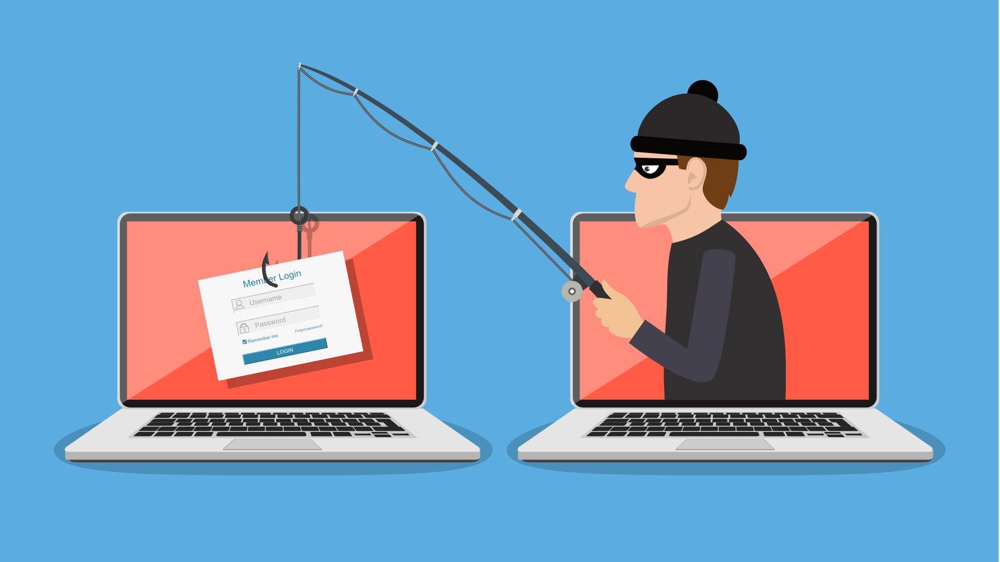

¿Qué es el phishing y cómo reconocerlo?
PhishingEl Phishing es una técnica de ingeniería social usada para engañar a personas y obtener credenciales, datos personales o dinero. En este artículo aprenderás a identificar las señales más comunes y las acciones concretas para protegerte.
